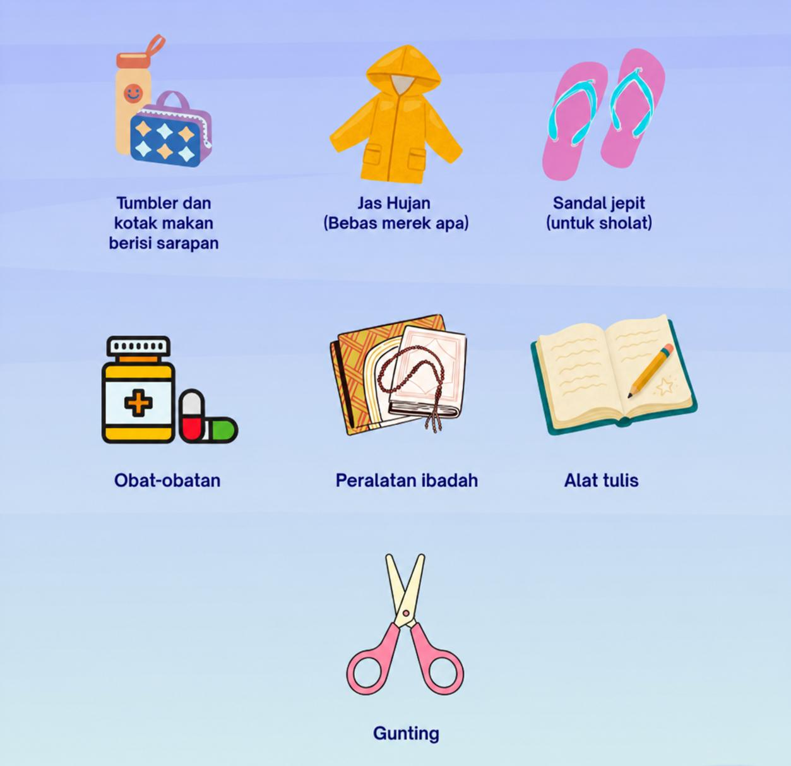
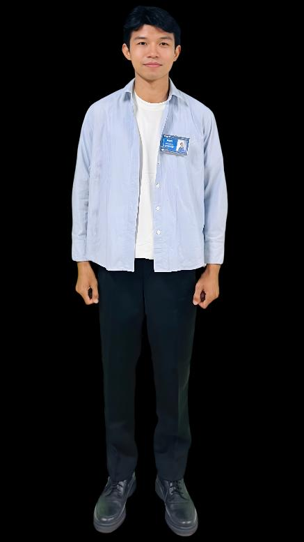
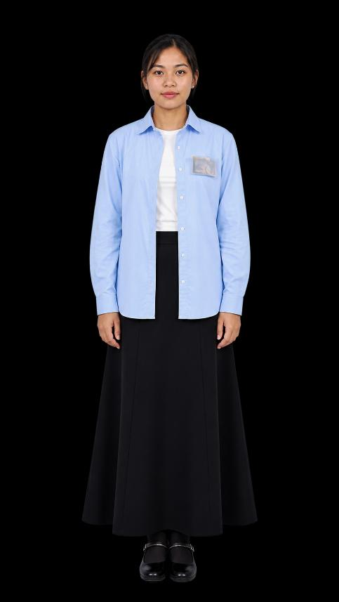
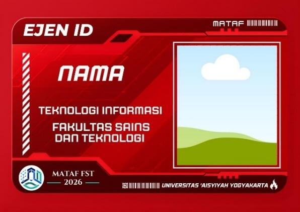
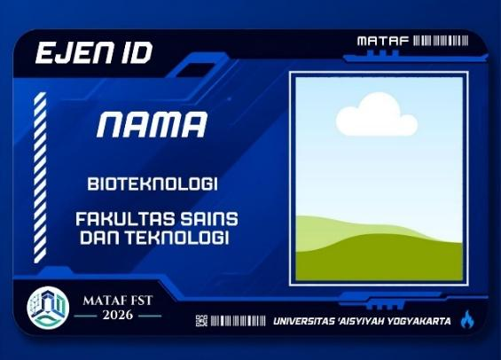
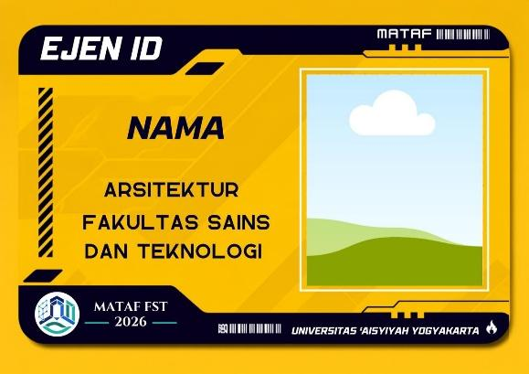
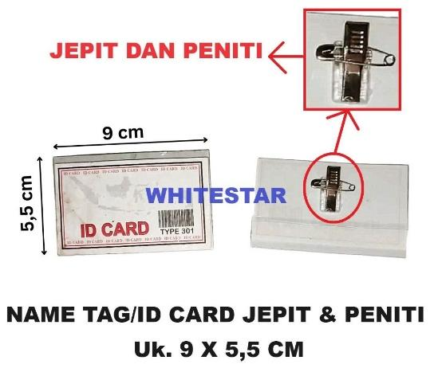
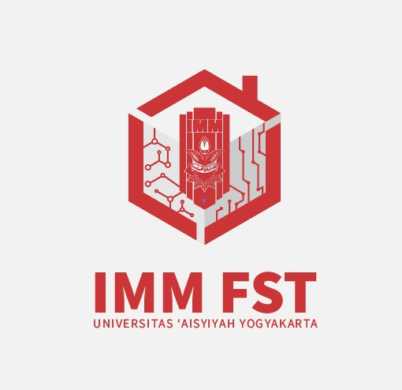

INFORMASI MATAF
Panduan Resmi Pelaksanaan MATAF FST UNISA 2026
Panduan Informasi MATAF
Pengantar
Selamat datang di pusat informasi resmi MATAF FST Universitas 'Aisyiyah Yogyakarta 2026.
TEMA RESMI MATAF FST 2026
“Empowering Young Intellectuals to Build Safe and Impactful Digital Space”
“Memberdayakan intelektual muda untuk membangun ruang digital yang aman dan berdampak”
Halaman ini memuat seluruh ketentuan resmi mengenai perlengkapan wajib, ketentuan dresscode, co-card, aset master logo, serta link pengumpulan tugas. Silakan pelajari setiap bagian dengan saksama.
Perlengkapan yang Harus Dibawa
Berikut adalah daftar 7 perlengkapan wajib yang harus dipersiapkan dan dibawa oleh seluruh mahasiswa baru selama pelaksanaan MATAF FST 2026:

- Tumbler dan kotak makan berisi sarapan.
- Jas hujan (bebas merek apa saja).
- Sandal jepit (untuk keperluan wudhu dan sholat).
- Obat-obatan pribadi.
- Peralatan ibadah.
- Alat tulis (buku catatan dan pena).
- Gunting.
Ketentuan Dresscode MABA
Seluruh mahasiswa baru wajib mengenakan pakaian rapi, sopan, dan sesuai dengan ketentuan resmi sebagai berikut:

- Mengenakan kemeja biru (baby blue) lengan panjang, sopan, rapi, dan tidak ketat.
- Mengenakan celana panjang bahan berwarna hitam, sopan, rapi, dan tidak ketat.
- Mengenakan kaos dalam berwarna putih.
- Mengenakan sepatu pantofel hitam.
- Mengenakan kaos kaki hitam, wajib menutup mata kaki.
- Tidak diperkenankan menggunakan aksesoris selain jam tangan.
- Rambut wajib rapi, tidak gondrong, dan tidak berwarna.
- Mengenakan kemeja biru (baby blue) sopan, rapi, dan tidak ketat.
- Mengenakan celana panjang hitam, sopan, rapi, dan tidak ketat (boleh mengenakan rok formal).
- Mengenakan hijab segi 4 berwarna navy.
- Mengenakan ciput (dalaman jilbab) berwarna hitam.
- Mengenakan inner berwarna putih (tidak ketat).
- Mengenakan sepatu pantofel hitam, tidak berhak (flat).
- Mengenakan kaos kaki hitam, wajib menutup mata kaki.
- Tidak diperkenankan menggunakan aksesoris selain jam tangan.

- Mengenakan kemeja biru (baby blue) sopan, rapi, dan tidak ketat.
- Mengenakan celana panjang hitam, sopan, rapi, dan tidak ketat (boleh mengenakan rok formal).
- Mengenakan inner berwarna putih (tidak ketat).
- Mengenakan sepatu pantofel hitam, tidak berhak (flat).
- Mengenakan kaos kaki hitam, wajib menutup mata kaki.
- Tidak diperkenankan mengenakan aksesoris selain jam tangan.
- Rambut diikat rapi sesuai ketentuan MATAF Universitas.
*Pakaian juga dapat ditemukan di offline market seperti JM Fashion, Jolie, dan toko pakaian formal lainnya.
Ketentuan Co-Card MABA
Co-Card wajib dipakai selama seluruh rangkaian kegiatan MATAF berlangsung dan tidak boleh dilepas.
- Co-Card dicetak/print dengan ukuran 5,5 × 9 cm.
- Foto dapat diganti dengan foto pilihan masing-masing (ketentuan sopan & berhijab bagi mahasiswa baru putri).
- Co-Card yang telah dicetak kemudian dimasukkan ke dalam Name Tag jepit / peniti (Uk. 9 × 5,5 cm).
- Warna kartu disesuaikan dengan Program Studi masing-masing:
- Bioteknologi: Warna Biru
- Teknologi Informasi: Warna Merah
- Arsitektur: Warna Kuning




Kebutuhan Logo Resmi
Aset logo resmi di bawah ini wajib dicantumkan dalam pengerjaan penugasan video MATAF FST 2026. Klik tombol di bawah untuk mengunduh berkas logo master dalam format PNG transparan.

Link Resmi Pengumpulan Tugas
Pastikan Anda telah memeriksa format dan kelengkapan penugasan sebelum mengunggah berkas ke tautan resmi panitia di bawah ini:
1. Pengumpulan Tugas Mandiri (Upload Twibbon)
Gunakan template twibbon resmi di Twibbonize, unggah ke Instagram dengan caption resmi, lalu kirimkan bukti link postingan melalui form tugas mandiri.
2. Pengumpulan Tugas Kelompok (Tugas 1 & Tugas 2)
Pengumpulan dilakukan oleh 1 perwakilan kelompok ke Google Drive dan Google Form panitia.
Buku Panduan & Pembagian Kelompok
Seluruh mahasiswa baru Fakultas Sains & Teknologi UNISA Yogyakarta diwajibkan mengunduh Buku Panduan resmi dan memeriksa kelompok masing-masing.
Buku Panduan MATAF
Memuat tata tertib, jadwal kegiatan, materi, dan seluruh pedoman teknis pelaksanaan MATAF FST 2026.
Pembagian Kelompok
Daftar nama anggota kelompok, program studi, nomor kelompok, serta koordinator kelompok masing-masing.
*Folder dapat diakses langsung menggunakan akun Google Anda.
Narahubung (Contact Person)
Apabila terdapat kendala atau pertanyaan seputar MATAF FST 2026, silakan hubungi narahubung resmi panitia: